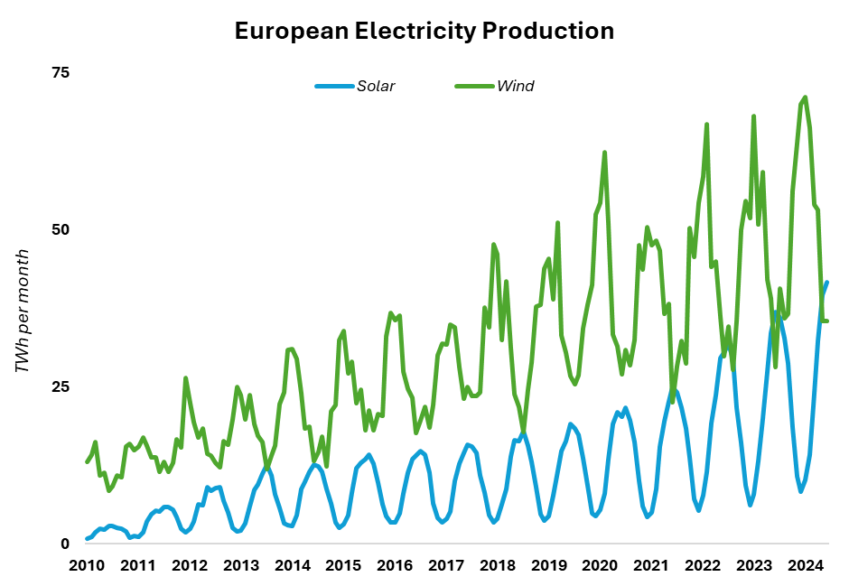
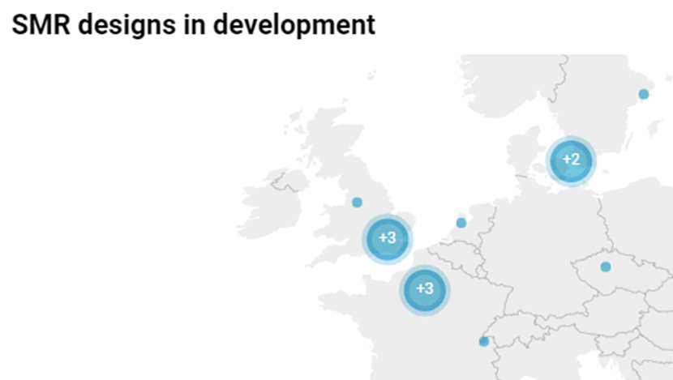

Energy Transition Watch: Can Small Modular Reactors Power Europe’s Green Future?
As Europe accelerates toward its net-zero climate targets, wind and solar dominate the decarbonization conversation. Yet, a lesser-discussed technology - next-generation nuclear -may prove to be a critical component.
For commercial real estate and other energy-intensive sectors, Small Modular Reactors (SMRs) offer a potentially consistent, low-carbon power source, and one that could complement intermittent renewables and support long-term grid stability.
What are SMRs?
SMRs are essentially scaled-down nuclear reactors that generate less than 300 megawatts (MW) of electricity, compared to traditional reactors that can generate more than 1,000 MW.
Similar to modular construction in residential building, their modular design allows for factory-based production and phased deployment, lowering capital risk and enabling implementation in locations with constrained energy infrastructure.
Key Benefits of SMRs:
- Enhanced Safety: Passive cooling systems and underground designs reduce accident risk and improve shutdown reliability.
- Lower Capital Costs: Thanks to their smaller scale and modular production, SMRs promise to be more cost-effective than traditional nuclear projects, reducing the financial barriers to nuclear energy.
- Scalability: SMRs can be deployed incrementally to meet regional demand, making them flexible for different scales of energy needs.
- Minimal Land Use: SMRs occupy a much smaller footprint than renewable energy sources like wind or solar farms, which is a clear advantage in densely populated or industrial regions.
Europe’s Energy Needs and the Role of SMRs
Europe is facing a monumental challenge as it transitions away from fossil fuels. While wind and solar are essential to lowering carbon emissions, they come with a significant issue: intermittency. Solar power, for instance, peaks during daylight hours but plummets at night. Wind can be seasonal and unpredictable. This variability makes energy storage and stable on-demand energy sources critical.

Source: IEA, Monthly Electricity Statistics (OECD - Europe)
SMRs can help close that gap, offering round-the-clock baseload power that complements solar and wind as fossil fuels are phased out. By providing constant, low-carbon baseload power, SMRs can help stabilize the grid and complement renewable energy as Europe phases out coal and reduces its reliance on natural gas. This is crucial as the European Union (EU) aims to reduce greenhouse gas emissions by 55% by 2030 and achieve net-zero emissions by 2050 under the European Green Deal. Maintaining energy reliability while achieving climate targets will require new technologies. SMRs may be part of that solution.
Current Developments and Challenges in Europe
While North America and parts of Asia have made notable progress on SMR development, Europe remains in the early stages. The UK is furthest along, with Rolls-Royce targeting operational deployment by the early 2030s.

Source: World Nuclear Association
The European Industrial Alliance for Small Modular Reactors, launched by the European Commission in 2024, aims to fast-track deployment by addressing regulatory barriers and fostering public-private coordination.
However, several challenges remain:
- Regulatory Framework: Nuclear energy is highly regulated, and Europe’s regulatory framework will need a major overhaul to accommodate SMRs.
- Public Perception: Despite improved safety features, nuclear remains unpopular in parts of Europe, particularly in countries with phase-out policies like Germany and Austria.
- Investment: Although SMRs are more cost-effective than traditional nuclear plants, their upfront costs are still higher than wind and solar. Securing sufficient investment will be key to scaling SMRs across Europe.
Balancing Optimism with Caution
It's important to acknowledge that nuclear projects, even advanced ones, have faced setbacks in Europe. For example, Finland’s Olkiluoto 3 reactor, a traditional nuclear plant, was plagued by years of delays and cost overruns. Originally scheduled for completion in 2009, it only came online in 2023. While SMRs promise faster deployment and lower costs, these challenges highlight the importance of managing expectations. Even with SMRs, regulatory hurdles and public concerns could slow progress, especially in regions with strong anti-nuclear sentiments.

Source: "Technology-specific Cost and Performance Parameters", IPCC, 2018
Comparing to Other Energy Sources
Cost competitiveness remains a major question. Based on Levelized Cost of Electricity (LCOE), SMRs are comparable to traditional nuclear, but still more expensive than most renewables. However, SMRs operate with capacity factors above 90%, providing uninterrupted power without the need for battery storage. This makes them valuable for stabilizing grids with high renewable penetration.
As the EU Emissions Trading System (ETS) drives up the cost of fossil-based energy, SMRs may become more viable relative to gas-fired generation. SMRs boast low fuel costs and minimal emissions, making them an attractive option in a carbon-constrained future.
Canada’s SMR Action Plan: A Case Study
Canada offers a live case study through its SMR Action Plan. The country is focusing on deployment in remote or industrial areas with limited access to renewable power. This offers a potential blueprint for parts of Europe facing similar geographic or infrastructure constraints.
Implications for the Commercial Real Estate
Energy demand in commercial real estate is rising as buildings become more technology-enabled and grid-interactive. The sector already accounts for an estimated 37% of global CO2 emissions.
For property owners and managers aiming to achieve net-zero carbon goals, securing a reliable, low-carbon energy source is essential. While renewables will undoubtedly play a key role, SMRs could offer the consistent power needed to support advanced building technologies without the carbon footprint of fossil fuels.
Consider a smart, energy-intensive asset such as a high-performance data centre integrated into a local grid supported by SMRs. Constant power availability would reduce volatility and improve sustainability.
As big tech players continue to be very vocal in advocating for nuclear energy to meet the increasing power needs of modern infrastructures, SMRs may offer CRE stakeholders a path to decarbonization without sacrificing energy reliability, particularly as electrification and automation increase baseline demand.
A Nuclear Option in a Diversified Energy Future
SMRs offer a promising yet early-stage technology that could help Europe reconcile energy reliability with decarbonization.
Europe’s climate targets require reliable, scalable, and low-carbon energy. While not a standalone solution, SMRs may fill a critical role alongside wind, solar, and storage.
UPDATE (October 2024): Google just announced a landmark deal with Kairos Power to purchase electricity from 6-7 SMRs to power its data centers, marking the first such agreement by a tech company. This initiative will provide up to 500 MW of carbon-free energy by 2035, supporting Google's decarbonization goals. The first reactor is expected to be online by 2030. The significance of this agreement lies in Google's role in supporting the development of new SMR technology from greenfield sites, rather than relying on existing nuclear facilities. By providing capital for the construction of next-generation reactors, this move could accelerate the deployment of advanced nuclear energy and signal a shift in how industries approach sustainable, 24/7 power solutions.